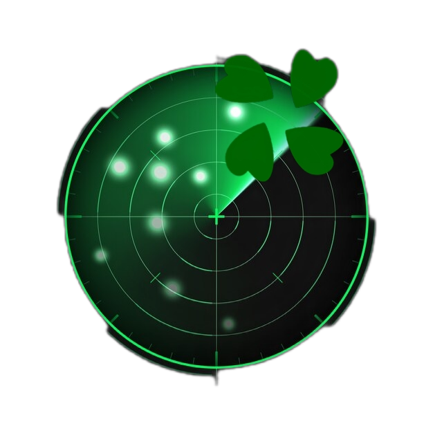

| Что это ? | |
|---|---|
|
Radarchan это проект посвящённый борьбе за свободу слова и анархию. Также его начало сподвигли действия одного президента именем которого я не хочу очернять этот сайт) Сам проект работает на технологии mesh трансляции пакетов и никак не может быть ограничен властями, модерация контента происходит лишь самими пользователями с помощью локальной защиты. Веселитесь, обсуждайте, кидайте мемы - всё ради лулзов это главное правило нашего проекта ! |
|
| Оки доки! | |
|---|---|
|
Активные доски: /b/ - Рандом /a/ - Аниме & Манга |
|